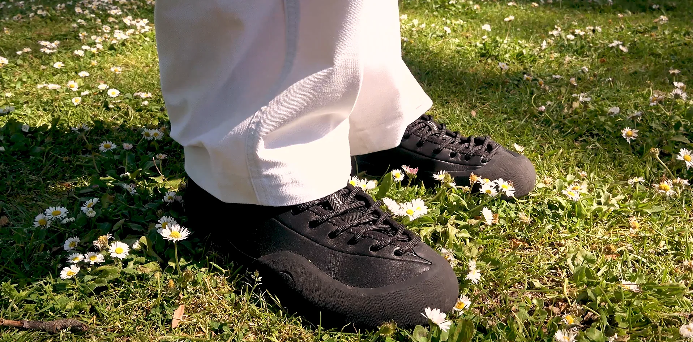
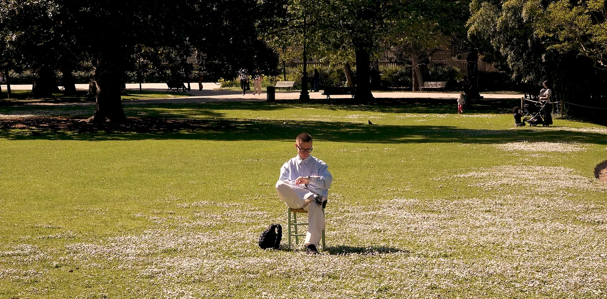
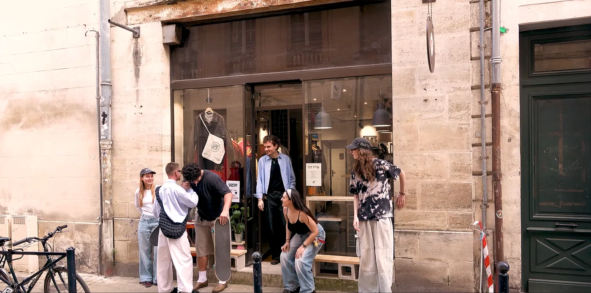
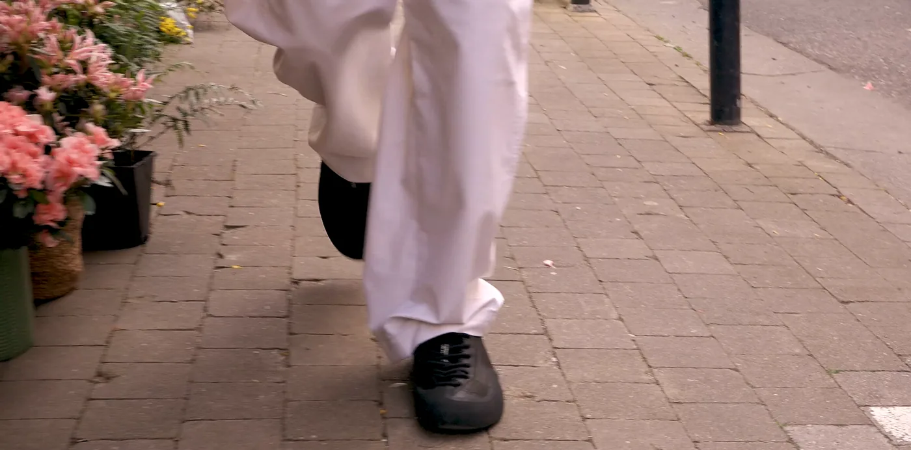
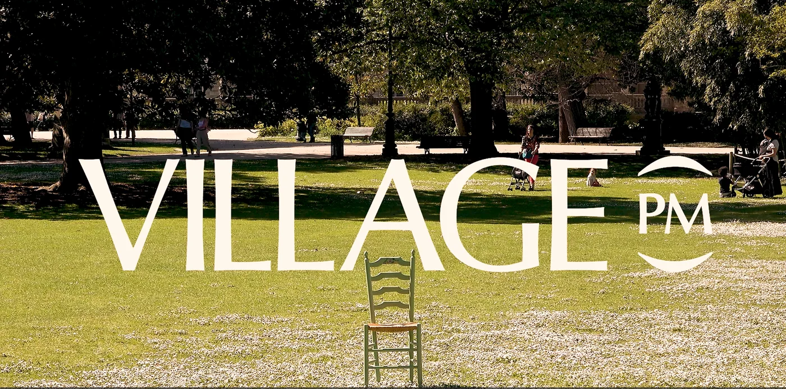
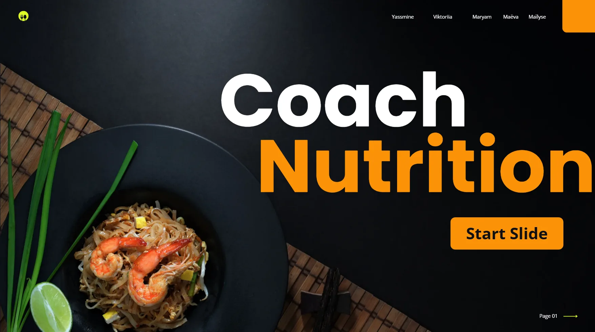
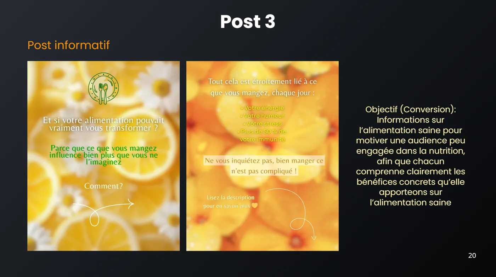
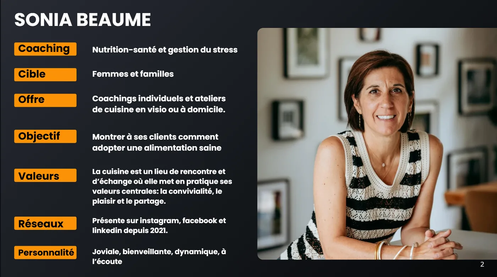

Campagne publicitaire
Village PM





Le Projet
Storytelling visuel
“1 PM”
2025 Bordeaux
Publicité fictive
Cadre : Workshop, BUT MMI
Marque : Village PM
Produit : Chaussure 1PM
Montage : Premiere Pro
Musiques :
Les feuilles mortes, Yves Montand
Give me some Answers, The New Fools
Cette publicité fictive puise son
inspiration dans l’histoire des fondateurs
de Village PM.
Adolescents, ils se retrouvaient
l’après-midi pour partager leur passion
du skate dans leur village.
J’ai traduit le passage de la solitude à la convivialité par un changement de rythme : un début monotone, puis une fin dynamique.
À 13 h — « 1 PM » —, la chaussure devient
le moteur d’une journée qui prend une nouvelle dimension.
Stratégie et création de contenus
Coach Me



Le Projet
Compétences développées
“Coach Me”
2025 Bordeaux
Atelier stratégie de communication en équipe
Cadre : Projet scolaire, BUT MMI
Entreprise : Sonia Cuisine Nutrition
Service : Atelier cuisine - Santé
Objectifs
- Trouver un coach nutritionniste.
- Analyse de profil, de marché, de concurrence.
- Proposer une nouvelle stratégie social media.
- Créer un réel et 3 posts promotionnels cohérents.
- Analyse de marque, des cibles et des audiences
- Étude de marché et benchmark concurrentiel
- Analyse des contenus et du taux d’engagement
- Définition d’une problématique stratégique
- Définition des objectifs de communication : notoriété, considération, conversion
- Positionnement de marque et branding
- Élaboration d’une stratégie social media et de brand content
- Conception d’un calendrier éditorial
- Création de contenus : posts, stories et reels
- Collaboration et travail en équipe